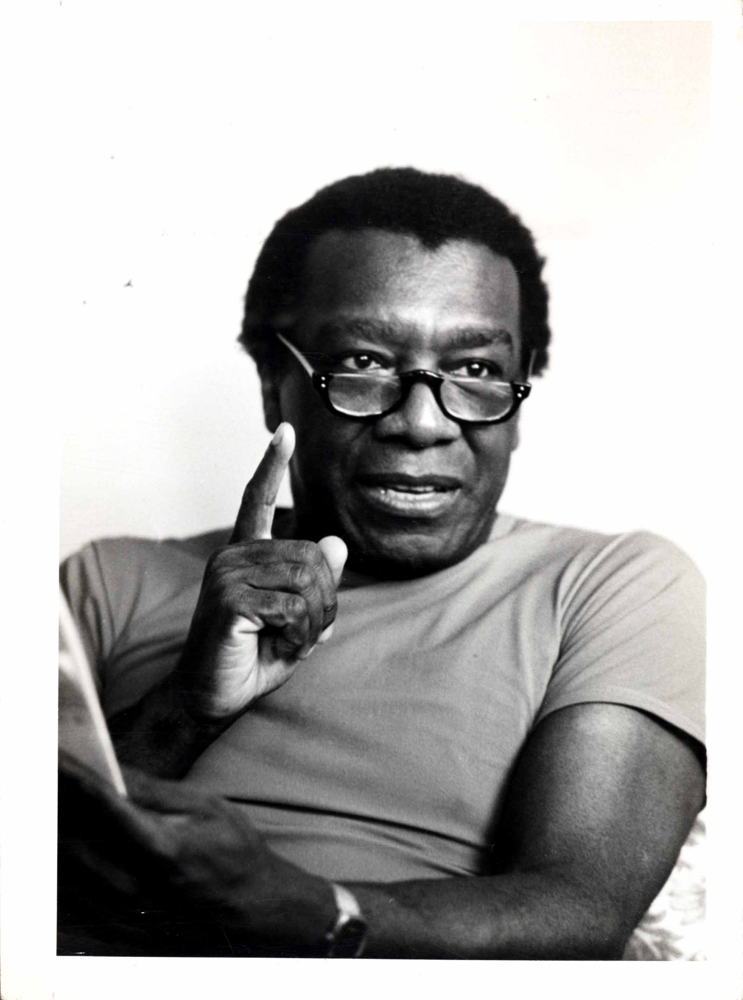

Milton Santos
 Milton Santos nasceu em 3 de maio de 1926 em Brotas de Macaúbas, Bahia. Embora formado em Direito, sempre lecionou geografia nas escolas de ensino médio da Bahia. Em 1958, concluiu um doutorado em geografia, na Universidade de Strasbourg, França. Foi colaborador dos jornais A Tarde, de Salvador e da Folha de S. Paulo. Esteve sempre envolvido com a política; em 1960 participou do governo, mas em 1964 foi preso em decorrência do golpe militar. Após sua saída da prisão trabalhou em universidades da França, Canadá, Estados Unidos, Venezuela e Tanzânia, na África. Retornou ao Brasil em 1977, pois queria que seu segundo filho nascesse na Bahia. Em 1978, iniciou sua carreira na Universidade de São Paulo, lecionando na Faculdade de Arquitetura e Urbanismo e posteriormente na Universidade Federal do Rio de Janeiro. Ao voltar para São Paulo tornou-se professor da Faculdade de Geografia da USP. Recebeu títulos de Doutor Honoris Causa nas universidades de Toulouse, Buenos Aires, Madri e Barcelona e outros no Brasil, destacando o de Professor Emérito da Faculdade de Filosofia, Letras e Ciências Humanas da USP. Milton Santos foi o primeiro nativo de um país de terceiro mundo a receber o prêmio Vatrin Lud, uma espécie de Prêmio Nobel da Geografia. Faleceu em 24 de junho de 2001, em São Paulo. Algumas Obras: Pobreza urbana (1978);